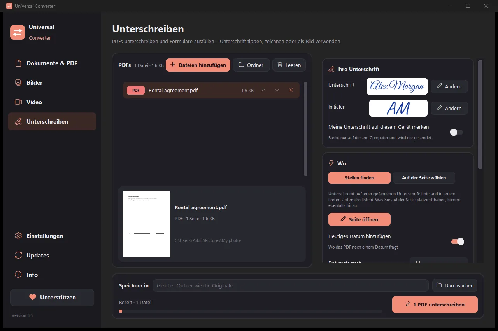

Ein PDF unterschreiben
Erstellen Sie Ihre Unterschrift einmal: Namen tippen und Stil wählen, mit Maus oder Finger zeichnen oder ein Foto davon auf Papier verwenden. Jedes PDF öffnet sich mit den markierten Unterschriftslinien und leeren Unterschriftsfeldern, die Universal Converter gefunden hat: Klicken oder tippen Sie darauf oder auf eine beliebige Stelle der Seite. Es speichert eine unterschriebene Kopie und lässt das Original unverändert. Dies ist eine sichtbare elektronische Unterschrift, keine zertifikatbasierte digitale Signatur.
Installieren und aktualisieren
- Öffnen Sie die heruntergeladene .dmg-Datei und ziehen Sie Universal Converter in „Programme“.
- Öffnen Sie die App. Beim ersten Mal blockiert macOS sie, weil sie nicht von Apple signiert ist: Klicken Sie auf „Fertig“.
- Öffnen Sie Systemeinstellungen > Datenschutz & Sicherheit, scrollen Sie nach unten, klicken Sie auf „Dennoch öffnen“ und geben Sie Ihr Passwort ein. Das ist nur einmal nötig.
Updates: Wenn Sie es beim ersten Start erlauben, sucht die App bei jedem Start nach neuen Versionen, prüft ihre digitale Signatur und installiert sie, wann Sie möchten.
Installieren und aktualisieren
- Tippen Sie auf dem Handy auf „Für Android herunterladen“.
- Öffnen Sie die heruntergeladene Datei. Wenn Android fragt, erlauben Sie Ihrem Browser oder Dateimanager, Apps zu installieren.
- Tippen Sie auf „Installieren“.
Updates: Wenn Sie die App öffnen, sucht sie nach einer neuen Version und meldet sich, wenn eine bereitsteht. Laden Sie sie genauso herunter und installieren Sie sie über die alte; Ihre Einstellungen bleiben erhalten.
Installieren und aktualisieren
- Laden Sie die .AppImage-Datei herunter.
- Machen Sie sie ausführbar: Rechtsklick, Eigenschaften > Zugriffsrechte und das Ausführen als Programm erlauben (oder im Terminal: chmod +x Universal-Converter-*.AppImage).
- Doppelklicken Sie darauf. Es wird nichts installiert: Die App ist diese eine Datei.
Updates: Wenn Sie es beim ersten Öffnen erlauben, sucht die App bei jedem Start nach neuen Versionen, prüft ihre digitale Signatur und ersetzt die AppImage-Datei an ihrem Ort.
So geht's
- Öffnen Sie Universal Converter.
- Ziehen Sie Ihre Dateien oder einen ganzen Ordner in das Fenster, oder klicken Sie auf Dateien hinzufügen.
- Wählen Sie PDF als Format, schalten Sie Unterschreiben ein und klicken Sie neben „Ihre Unterschrift“ auf Ändern, um sie zu erstellen. Klicken Sie auf Konvertieren: Jedes PDF öffnet sich mit markierten Unterschriftszeilen - klicken Sie darauf oder wählen Sie Unterschrift, Initialen, Datum oder Text und klicken Sie an die richtige Stelle.
- Klicken Sie auf Fertig. Jede Datei wird als Name_signed.pdf neben dem Original oder im gewählten Ordner gespeichert.

Warum offline?
Universal Converter arbeitet auf Ihrem eigenen Gerät. Ihre Dateien bleiben privat, große Dateien sind kein Problem, und es funktioniert ohne Internetverbindung.
Was es noch kann
- PDF in Word umwandeln
- Word-Dokumente in PDF umwandeln
- Mehrere Dateien zu einem PDF zusammenfügen
- Ein PDF auf eine gewählte Größe komprimieren
- PDF auf 100 KB, 200 KB oder jede Größe für Online-Formulare verkleinern
- PDF-Seiten in JPG-Bilder umwandeln
- Gescanntes Dokument in eine bearbeitbare Word-Datei umwandeln
- Bilder zwischen JPG, PNG, WEBP und mehr umwandeln
- Bildgröße ändern oder auf eine Dateigröße verkleinern
- Foto oder Unterschrift auf 20 KB, 50 KB oder genaue Pixel bringen
- Fotos zu einem PDF zusammenfügen
- JPG in PDF unter 100 KB
- Text aus einem Bild kopieren (OCR)
- Video komprimieren, ohne es hochzuladen
- Videos zwischen MP4, MKV, WebM, MOV und AVI umwandeln
- Den Ton eines Videos als MP3 speichern
- GIF aus einem Video erstellen
- Tabellen aus einem PDF nach Excel holen
- Kontoauszug von PDF in Excel umwandeln
- Tabellen aus PDF-Rechnungen nach Excel übertragen
- Ein PDF-Formular ausfüllen